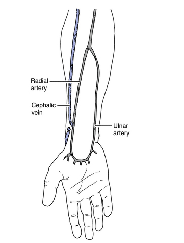

CPT 93990
- Exam duration 45 minutes.
Acces Types:
Location:
- Upper Arm
- Forearm
- Lower Extremity
Standard Usage of Hemodialysis Ultrasounds
- Evaluation for patency
- Rule out aneurysms and pseudoaneurysms
- Rule out inflow stenosis
- Rule out outflow thrombus
Back to Home Page